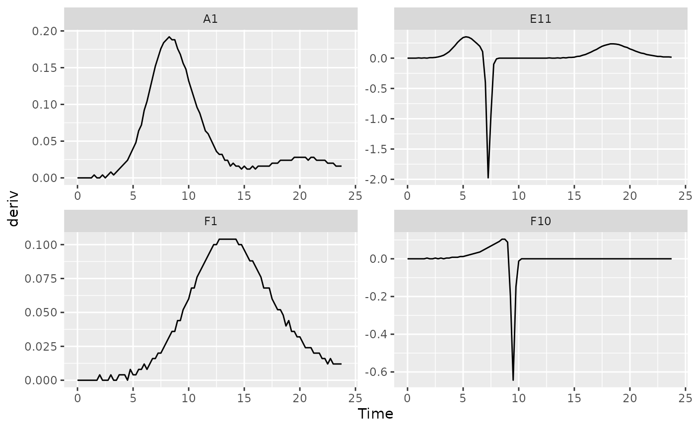
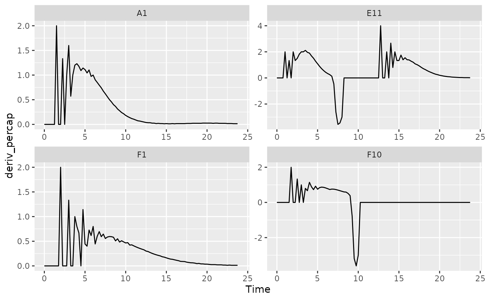
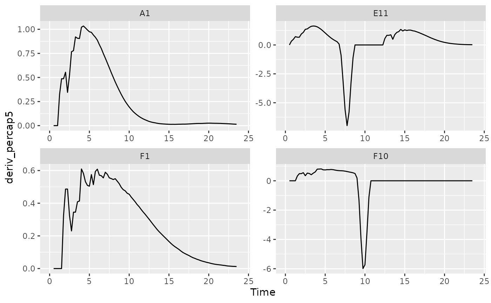

Where are we so far?
- Introduction:
vignette("gc01_gcplyr") - Importing and transforming data:
vignette("gc02_import_reshape") - Incorporating experimental designs:
vignette("gc03_incorporate_designs") - Pre-processing and plotting your data:
vignette("gc04_preprocess_plot") -
Processing your data:
vignette("gc05_process") - Analyzing your data:
vignette("gc06_analyze") - Dealing with noise:
vignette("gc07_noise") - Statistics, merging other data, and other resources:
vignette("gc08_conclusion") - Working with multiple plates:
vignette("gc09_multiple_plates")
So far, we’ve imported and transformed our measures, combined them with our design information, and pre-processed and plotted our data. Now we’re going to do some processing of our raw data: calculating derivatives.
If you haven’t already, load the necessary packages.
library(gcplyr)
#> ##
#> ## gcplyr (Version 1.8.0, Build Date: 2024-01-29)
#> ## See http://github.com/mikeblazanin/gcplyr for additional documentation
#> ## Please cite software as:
#> ## Blazanin, Michael. 2023. gcplyr: an R package for microbial growth
#> ## curve data analysis. bioRxiv doi: 10.1101/2023.04.30.538883
#> ##
library(dplyr)
#>
#> Attaching package: 'dplyr'
#> The following objects are masked from 'package:stats':
#>
#> filter, lag
#> The following objects are masked from 'package:base':
#>
#> intersect, setdiff, setequal, union
library(ggplot2)
# This code was previously explained
# Here we're re-running it so it's available for us to work with
example_tidydata <- trans_wide_to_tidy(example_widedata_noiseless,
id_cols = "Time")
ex_dat_mrg <- merge_dfs(example_tidydata, example_design_tidy)
#> Joining with `by = join_by(Well)`
ex_dat_mrg$Well <-
factor(ex_dat_mrg$Well,
levels = paste(rep(LETTERS[1:8], each = 12), 1:12, sep = ""))
#Convert time to hours
ex_dat_mrg$Time <- ex_dat_mrg$Time/3600How to process and analyze your data
With your data and design information pre-processed, your dataset is now organized in a way that’s easy to export and analyze.
Broadly speaking, there are two main approaches to analyzing growth curves data:
- directly quantify attributes of the growth dynamics (what gcplyr does)
- fit the growth dynamics with a mathematical model, then extract parameters from the fitted model (what other packages do, see vignette(“08_conclusion”))
At this point, since the data is now well-organized, advanced users
may also decide they want to write their own custom analyses (in lieu
of, or alongside, gcplyr-based and/or fitting-based
analyses).
So, how do we directly quantify attributes of growth curves? Generally, we find features of the density data and its derivatives. Different projects may desire different analyses, so this article and the Analyzing Data and Dealing with Noise articles are written to highlight common analyses, rather than prescribing what everyone should do.
Below I list common metrics that require derivatives to be calculated. If you intend to calculate any of those metrics, or just want to calculate or plot the derivatives, continue reading. Otherwise, feel free to skip right to the Analyzing Data article.
Metrics requiring derivatives:
- the lag time
- the time to reach some growth rate
- the maximum per-capita growth rate (i.e. minimum doubling time)
- the inflection point
- the density and time when a diauxic shift occurs
- the maximum per-capita growth rate during diauxie
Before we dig into calculating derivatives, we first need to
familiarize ourselves with the dplyr package and its
functions group_by and mutate. Why? Because
the upcoming gcplyr processing functions are best
used within dplyr::mutate. If
you’re already familiar with dplyr, feel free to skip
straight to Calculating
Derivatives. If you’re not familiar yet, the primer will
teach you all you need to know to use gcplyr.
A brief primer on dplyr
The R package dplyr provides a “grammar of
data manipulation” that is useful for a broad array of data analysis
tasks (in fact, dplyr is the direct inspiration for the
name of gcplyr!) For our purposes, we’re going to focus on
two functions: group_by and mutate.
The mutate function in dplyr allows users
to easily create new columns in their data.frame’s. For us,
we’re going to use mutate to create columns with the
derivatives we calculate. However, we want to make sure that
derivative-calculating is done on each unique well
independently. In order to do that, we’re first going to use the
group_by function, which allows users to group the rows of
their data.frame’s into groups that mutate
will then treat independently.
For growth curves, this means we will:
-
group_byour data so that every unique well is a group -
mutateto create new columns with our calculated derivatives
For group_by, we need to specify the
data.frame to be grouped, and then we want to list all the
columns needed to identify each unique well in our dataset. Typically,
this includes all of our design columns along with the plate name and
well name. Make sure you’re not grouping by Time, Absorbance,
or anything else that varies within a well, since if you do
dplyr will group timepoints within a well separately.
To use mutate, we simply have to specify:
- the name of the variable we want results saved to
- the function that calculates the new column
If you want additional columns, you simply add them to the
mutate.
As you’ll see throughout the rest of this article, we’ll be using
group_by and mutate to calculate derivatives.
If you want to learn more, dplyr has extensive
documentation and examples of its own online, but this primer and the
coming examples should be sufficient to calculate derivatives with
gcplyr.
Processing data: calculating derivatives
There are two derivatives we are primarily interested in calculating:
- the plain derivative - the slope of the original density data
- the per-capita derivative - the growth rate of the cells
gcplyr includes a calc_deriv to calculate
both of these.
A simple derivative
To calculate a simple derivative (the slope of our original data)
using calc_deriv, we simply have to provide the x and y
values. Note that this is not the growth rate of the
cells, but rather is a measure of how quickly the whole population was
growing at each time point.
ex_dat_mrg <- mutate(group_by(ex_dat_mrg, Well, Bacteria_strain, Phage),
deriv = calc_deriv(x = Time, y = Measurements))To visualize these results, let’s look at a few wells that are representative of the overall diversity of dynamics in our example data. (In your own code, you should visualize all your data).
sample_wells <- c("A1", "F1", "F10", "E11")
# Now let's plot the derivative
ggplot(data = dplyr::filter(ex_dat_mrg, Well %in% sample_wells),
aes(x = Time, y = deriv)) +
geom_line() +
facet_wrap(~Well, scales = "free")
#> Warning: Removed 1 row containing missing values (`geom_line()`).
You might notice that these lines aren’t super smooth. Why? The plate reader data has a limited resolution, only to the nearest 0.001, causing the derivative to “jump” when the reading increases.
Per-capita derivative
To calculate the per-capita derivative, we simply modify our use of
calc_deriv with the argument percapita = TRUE.
Note that in this case, you are required to specify a blank value,
i.e. the value of your Measurements that corresponds to a
population density of 0. If your data have already been normalized,
simply add blank = 0.
ex_dat_mrg <- mutate(group_by(ex_dat_mrg, Well, Bacteria_strain, Phage),
deriv_percap = calc_deriv(x = Time, y = Measurements,
percapita = TRUE, blank = 0))
# Now let's plot the per-capita derivative
ggplot(data = dplyr::filter(ex_dat_mrg, Well %in% sample_wells),
aes(x = Time, y = deriv_percap)) +
geom_line() +
facet_wrap(~Well, scales = "free")
#> Warning: Removed 1 row containing missing values (`geom_line()`).
These derivatives are very jumpy. Why? The same limited resolution of
the plate reader has an amplified effect on the per-capita derivative
when densities are very close to 0. Luckily, calc_deriv can
calculate derives by fitting a linear regression to multiple points,
reducing this jumpiness in the derivative.
To use this fitting functionality of calc_deriv, specify
either the window_width or window_width_n
parameter. window_width specifies how wide the window used
to include points for the fitting is in units of x, while
window_width_n specifies it in number of data points. I
recommend trying a window_width_n of three or five data
points, since that works for most cases.
For best practice, I recommend doing this fitting on log-transformed
y values, since exponentially growing density values are
linear when log-transformed. You can achieve this simply by setting
trans_y = 'log'. With log-transformation, note that
calc_deriv will return NA for any data points
where the reading is equal to or below your blank
value.
ex_dat_mrg <- mutate(group_by(ex_dat_mrg, Well, Bacteria_strain, Phage),
deriv_percap5 = calc_deriv(x = Time, y = Measurements,
percapita = TRUE, blank = 0,
window_width_n = 5, trans_y = "log"))
# Now let's plot the derivative
ggplot(data = dplyr::filter(ex_dat_mrg, Well %in% sample_wells),
aes(x = Time, y = deriv_percap5)) +
geom_line() +
facet_wrap(~Well, scales = "free")
#> Warning: Removed 4 rows containing missing values (`geom_line()`).
Great! The jumpiness has been reduced immensely.
Converting per-capita growth rates into doubling times
If you’d rather express your per-capita growth rates as a doubling
time, simply use the doubling_time function to convert your
per-capita growth rates into equivalent doubling times.
ex_dat_mrg <- mutate(group_by(ex_dat_mrg, Well, Bacteria_strain, Phage),
deriv_percap5 = calc_deriv(x = Time, y = Measurements,
percapita = TRUE, blank = 0,
window_width_n = 5, trans_y = "log"),
doub_time = doubling_time(y = deriv_percap5))
head(ex_dat_mrg)
#> # A tibble: 6 × 9
#> # Groups: Well, Bacteria_strain, Phage [4]
#> Time Well Measurements Bacteria_strain Phage deriv deriv_percap
#> <dbl> <fct> <dbl> <chr> <chr> <dbl> <dbl>
#> 1 0 A1 0.002 Strain 1 No Phage 0 0
#> 2 0 F1 0.002 Strain 31 No Phage 0 0
#> 3 0 F10 0.002 Strain 34 Phage Added 0 0
#> 4 0 E11 0.002 Strain 29 Phage Added 0 0
#> 5 0.25 A1 0.002 Strain 1 No Phage 0 0
#> 6 0.25 F1 0.002 Strain 31 No Phage 0 0
#> # ℹ 2 more variables: deriv_percap5 <dbl>, doub_time <dbl>What’s next?
Now that you’ve processed your data, you’re ready to analyze it!
- Introduction:
vignette("gc01_gcplyr") - Importing and transforming data:
vignette("gc02_import_reshape") - Incorporating experimental designs:
vignette("gc03_incorporate_designs") - Pre-processing and plotting your data:
vignette("gc04_preprocess_plot") - Processing your data:
vignette("gc05_process") - Analyzing your data:
vignette("gc06_analyze") - Dealing with noise:
vignette("gc07_noise") - Statistics, merging other data, and other resources:
vignette("gc08_conclusion") - Working with multiple plates:
vignette("gc09_multiple_plates")